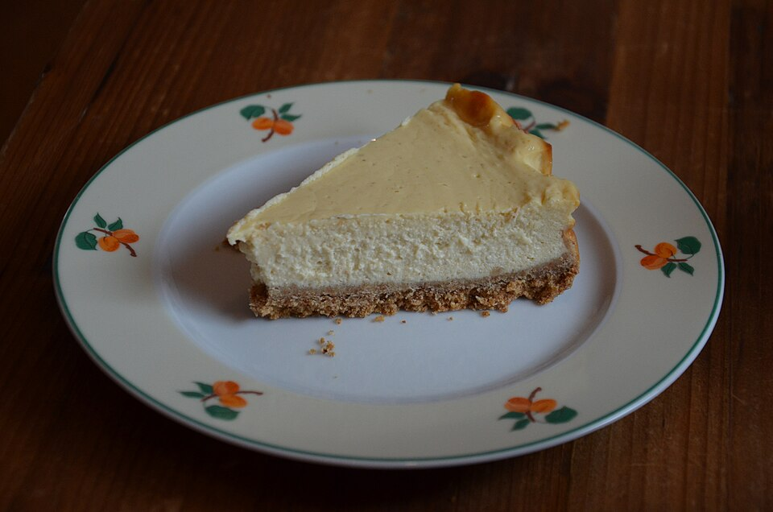

Homemade Cheesecake

Cheesecake is a well-loved popular dessert mostly made of cream cheese. It has a rich texture,
sweet taste, and is fairly easy to make.
Ingredients
Crust
- 11/2 cups graham cracker crumbs
- 1/4 cup finely ground walnuts
- 1 tbsp cinnamon sugar
- 1/2 cup butter, melted
Filling
- 3 (8 ounce) packages cream cheese, softened
- 3/4 cup white sugar
- 1 tbsp vanilla extract
- 1 cup heavy whipping cream
- 3 large eggs, slightly beaten
Directions
- Preheat the oven to 375°F.
- To make the crust, combine:
- Graham cracker crumbs
- Walnuts
- cinnamon sugar
in the bottom of a 9in springform pan.
Press into the bottom of the pan and 1 to 2 inches up the sides.
Place in the freezer to set up.
- While crust chills, make filling:
- Beat cream cheese, sugar, and vanilla in a large bowl
with an electric hand mixer until combined
- Add heavy cream slowly while beating on low speed; mix until
smooth
- Add eggs, one at a time, beating on low speed until combined
- Remove crust from the freezer and pour in filling
- Bake in the preheated oven until center appears almost set when gently shaken, 35 to 45 minutes.
- Remove cheesecake carefully from the oven
and place on a wire rack to cool, about
15 minutes.
-
Slide a butter knife around the outer edge to
separate cheesecake from the pan.
- Let cool to room temperature, about 30 minutes.
- Unclip the side of the pan and remove
the ring.
- Let cool for another 30 minutes; chill in the
refrigerator at least 4 hours to overnight
before serving.
Home
Instructions from Allrecipes